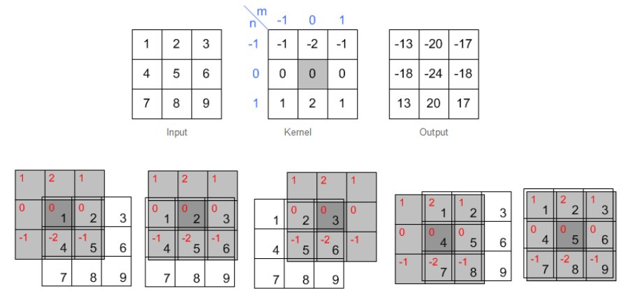
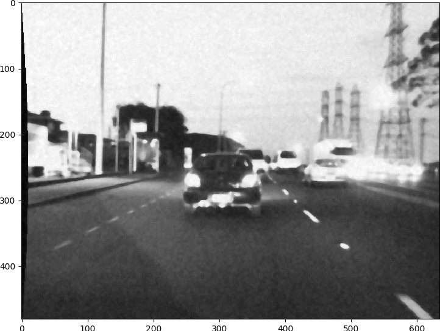
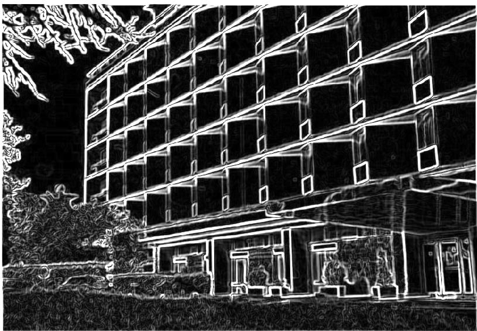

Week 4: Image Filtering and Edge Detection
These notes are inspired by slides made by TA Eng.Mohamed Hisham
- Readings
- 2D Convolution
- Smoothing Kernels
- Edge detection kernels
- Gradient magnitude and direction
- Canny edge detection algorithm
- Demo
- Useful links
Readings
2D Convolution
Convolution is the process to apply a filtering kernel on the image in spatial domain.
Basic Steps are
- Flip the Kernel in both horizontal and vertical directions (center of the kernel must be provided)
- Move over the array with kernel centered at interested point.
- Multiply kernel data with overlapped area.
- Sum or accumulate the output.
Note :
Size of output must be same size of input and we need to pad image for not defined pixels.
Example

Smoothing Kernels
Smoothing filters are used in preprocessing step mainly for noise removal. There ar different kernels for smoothing
Original Image

Adding Noise

Box, mean or average filter
Example 3x3 box filter

Gaussian filter
Derived from 2D gaussian function
Example: This kernel is approximation of gaussian function

Median Filter
It is nonlinear digital filter. It is efficient in removal of what so called salt and pepper noise.

Edge detection kernels
Edges represents the object boundaries. So edge detection is a very important preprocessing step for any object detection or recognition process. Simple edge detection kernels are based on approximation of gradient images. Another advanced edge detection algorithms will discussed in details.
Prewitt operator
For
For
Sobel operator
For
For
Laplacian
It is an approximation of second order derivative that defines zeros crossing. For Example 3x3 laplacian is :
Laplacian usually is applied after gaussian smoothing. So LOG refers to laplacian of gaussian.
Gradient magnitude and direction
Gradient magnitude of the image relates both directions and . It represents the strength of the edge. While gradient angle represents the direction of the edge or direction of intensity variation.
Gradient magnitude is given by
and Gradient direction:
Canny edge detection algorithm
It was developed by John F. Canny in 1986. Canny operator is a multi-stage algorithm that detects wide range of edges.
Stages
- Smoothing for noise removal.
- Finding Gradients.
- None-maximum suppression.
- Double Thresholding.
- Edge Tracking by hysteresis.
Smoothing
The first stage in canny edge detection algorithm is smoothing to remove noise that may cause false edges. Kernel used in this step is 5x5 gaussian kernel with $\sigma = 1.4$ and that it
Original Image


Finding Gradients
This is done using sobel operator in both x and y direction and getting gradient magnitude as described later.

None-maximum suppression
We aim to suppress all weak edges except local maxima. To do that we have to use gradient direction image.
- Compare the edge strength of the current pixel with the edge strength of the pixel in the positive and negative gradient directions.
- Suppress that pixel (set to zero) if its value is lower than pixels in same direction.
Gradient Direction

Direction must be quantized to 8 directions or angles to use 8-Connectivity.


The result of this stage would be an edge image with thin edges.

Double thresholding
After none-maxima suppression we need to suppress pixels with low gradient values to have only strong edges. None-maxima suppression eliminates only local weak edges but here we globally eliminate weak edges. We have two threshlods $T_l$ and $T_h$ selected by user.
if image[x,y] < TL:
image[x,y] = 0
elif image(x,y) > TH:
image[x,y] = 1

What about pixels with in-between values ?
Next section tells us.
Edge tracking by hysteresis
For pixels with values in-between $T_l$ and $T_h$ we check the 8 neighbors if it has a strong point in its neighbors so it is a part of the edge and if not suppress it.

Demo
$ git clone https://github.com/sbme-tutorials/cv-week4-demo